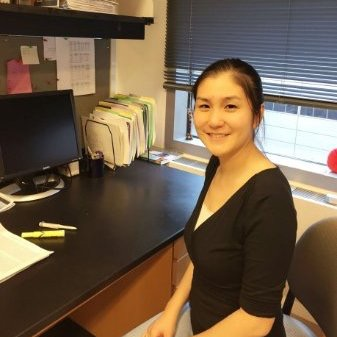

About me

My name is Yilin Xu. I was born in China and I moved to US in 2010. Soon after my PhD in Microbiology, I joined Dr.Cheng's lab in Northwestern University Department of Hematology/Oncolgy for my five years postdoctoral training. Currently, I work in Northwestern University Department of Pharmacology, my title is bioinformatic analyst.
My expertise acrosses three domains: Biology, Compute Science and Statistics. My goal is to utilize human genome or transcriptome profile to predict patient's SAE (serious side effect) to drug and develop algorithm for personalized dosing.
I have profound knowledge in Cancer Biology, Molecular Biology and Genetics. My coding skills are shell scripting and python programming. I'm proficient in linux enviroment and high performance cluster for parallal computing. I constantly apply cutting edge softwares for next generation sequencing analysis. Besides, I'm familiar with Statistical Inference, Baysian Inference and Regression Modeling. I use R and Bioconductor on a daily basis.
To achieve better success in my career, I participate in Northwestern University Coding Bootcamp for full stack web development training. I expect to further improve my logic thinking, coding skill and database query/construction. I want to develop user interface softwares for customers who doesn't know coding but want to perform next generation sequencing analysis.
Connect with Me